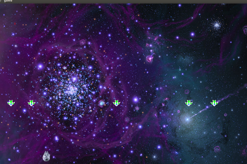

IMU Galaxian is a computer game designed using processing, similar to 8-bit video game “Galaxian” we used to play in our childhood. I gave it a little star wars effect by making player's ship as star war's ship and similar laser shooting sound. A wrist tied device like wrist watch, constituting IMU sensors over arduino board, was made, used as remote control. Gestures made by hands were used to control player's ship and shoot accordingly, whereas enemy ships were coming on random basis. It was a simple game, created just for fun during Tinker time provided while working in Ducere Technologies Pvt Ltd.